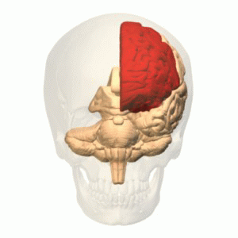

The Frontal Lobe
The frontal lobe is the largest of the four major lobes in the brain and is located in the front of each hemisphere. It is separated from the other lobes by a groove between the tissues called sulcus. The frontal lobe can be further divided into the frontal cortex which includes the premotor cortex and the primary motor cortex. The front of the frontal lobe is called the prefrontal cortex. The frontal cortex can be considered the "action cortex" and is responsible for action of some kind, be it skeletal movement, speech, regulation of ones emotions etc. In humans, the prefrontal cortex is responsible for reasoning.

Back To Start